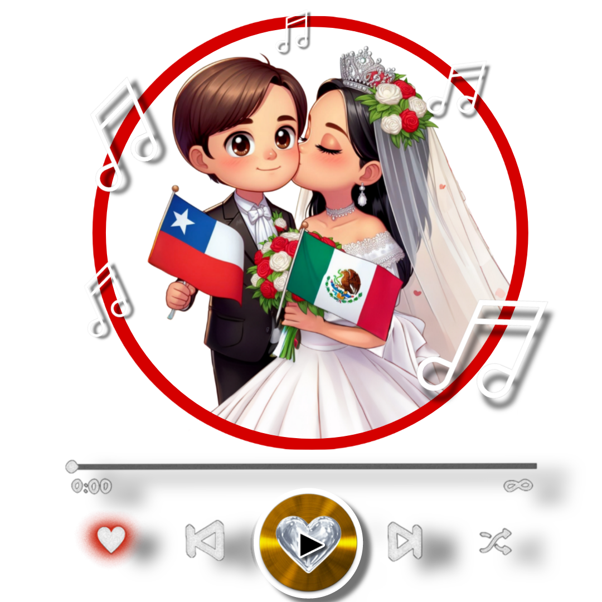
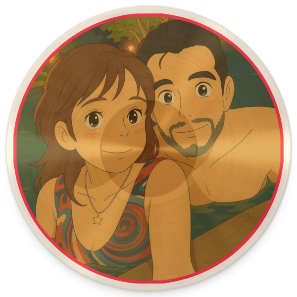

Reproduciendo: Canción 1 - Siempre Tú- ▶️ Canción 1 - Siempre Tú
- ▶️ Canción 2 - Siempre Contigo
- ▶️ Canción 3 - Estoy Contigo
- ▶️ Canción 4 - Me Acordaba de Ti
- ▶️ Canción 5 - Donde Te Pueda Abrazar
- ▶️ Canción 6 - La Primera Vez que Fuiste Real
- ▶️ Canción 7 - Eres Madre, No Mártir
- ▶️ Canción 8 - Ella es el Color
- ▶️ Canción 9 - Mi Novia Eterna▶️ Canción 10 - Eres Mi Destino